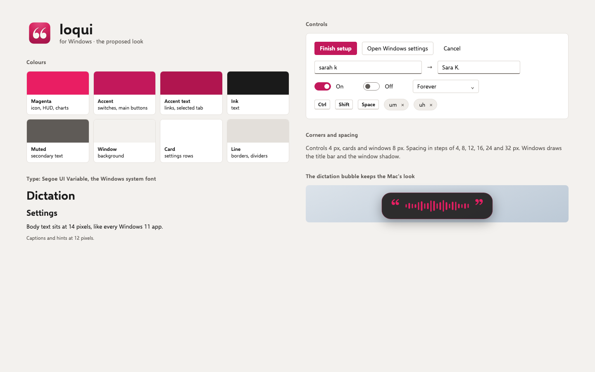
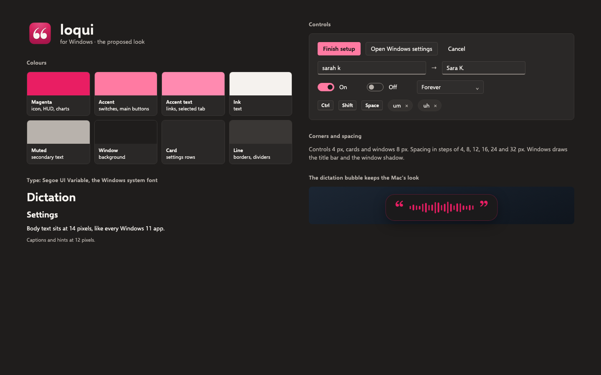
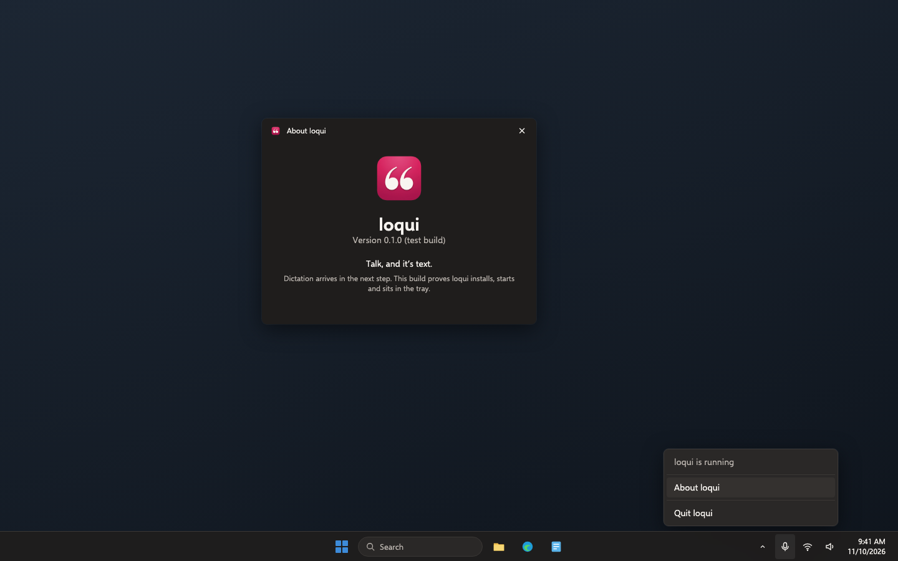

Loqui · Plan · Draft 1 · November 10, 2026
Loqui for Windows, step 1: groundwork
Loqui gets a Windows version that starts and sits by the clock, and one shared set of cleanup rules that the Mac app and the Windows app must both pass.
What approving this does. A builder sets up the Windows app inside the Loqui project, writes the cleanup rules down as shared examples, and records where Loqui runs. It accepts my recommendations below unless you change one. Nothing is downloadable by the public yet; that is step 6.
Your words
November 10, to Aiva"I need you to have it spin up a plan to create a Windows version of this product."
What changes
This is the first of six steps that make Loqui for Windows: the same product, with the same promise that your voice never leaves your computer. This step lays the ground the other five stand on.
- One set of cleanup rules for both apps. Filler words, capitals, punctuation, your spelling dictionary and sentence healing are written down once as about 60 example sentences, each with what goes in and what must come out. The Mac app is checked against them on every change, and the Windows app must pass the very same list. If one app's rules drift, its check fails.
- A Windows app that starts. It installs, starts, and puts the loqui icon by the Windows clock with About and Quit. No dictation yet; that is step 2.
- Checked on real Windows computers, for free. Every change is built and started on GitHub's Windows computers, both the usual Intel and AMD kind and the newer Arm laptops. GitHub doesn't charge for this on public projects. You see the result as a picture taken on that Windows machine.
- Your settings file works on both. A cleanup settings file from the Mac loads unchanged on Windows, so your dictionary can move between them.
- Where Loqui runs is written down. On people's own computers, downloaded from GitHub. The platform registry and the project file say so.
- The Windows look. Proposed below for you to approve: Windows' own font and shapes, carrying Loqui's magenta, cream and the quote mark.
Who it's for: public. Anyone can download Loqui, with no account. This step's build is a test build on the GitHub check page only.
The series, and what was proved first
Six steps, each about a day for one builder, each leaving something you can see working:
- Groundwork (this plan): shared rules, a Windows app that starts, where it runs.
- Dictation: press the shortcut, speak, and clean text lands at the cursor in any Windows app.
- Settings, history and welcome: the shortcut recorder, dictionary, filler words, history and the Recent menu.
- Stats: the dictation stats window with the calendar period picker.
- Signed installer, updates and a test channel: no Windows warnings, automatic updates, a way to go back.
- Launch: Windows on the download page and in the README, and the first public Windows version.
Before promising any of this, I ran a short experiment on GitHub's Windows computers (three runs, about 20 minutes). What it showed:
- On-device speech works on Windows, fast. A 44-second recording became text in 5.2 seconds on an ordinary 2-core Intel/AMD machine and 2.8 seconds on an Arm one, with punctuation and capitals, word for word. Nothing went online. German, Spanish and French also came out right.
- The whole loop works. A pressed shortcut was caught and kept away from the app underneath, a spoken sentence went in through the normal microphone path, and the text appeared in Notepad exactly as heard. Picture in step 2.
- Windows can block the microphone for desktop apps with a privacy switch. The experiment hit this, so step 2 shows a plain message about it and step 3's welcome window leads you to the switch.
- The window technology makes no calls of its own. A bare test window ran for a minute and opened no internet connections, so the screens can be built the modern way without breaking the privacy promise.
Screens, before and after
"Before" is the real Mac app today, drawn from its own code with sample data. "After" is the Windows look drawn in a separate page and photographed. Loqui for Windows is a desktop app, so there is no phone size. Click any picture to see it big.
The look



loqui by the clock
The Mac's menu-bar menu is not pictured: it lists real recent dictations.


Empty, loading, error and no permission
- Empty: nothing to show yet; the menu holds About and Quit.
- Loading: the icon appears within 2 seconds of starting.
- Error: if Windows is missing its built-in web view (very rare on Windows 11), loqui shows one message with a link to Microsoft's page for it, instead of downloading anything itself.
- No permission: nothing needed in this step. Installing needs no administrator.
Risk
Not risky. Why: no one's data is touched, nothing is sent, no money or keys. The Mac app only gains tests; how it behaves doesn't change.
Decisions, with my recommendation
Approving this draft says yes to each recommendation unless you change one.
1. Where Loqui runs
- Recommended: on people's own computers. Installers live on GitHub's release pages, the download page and update lists on GitHub's free web hosting (as the Mac's do today), and the Windows checks on GitHub's free Windows computers.
- Host downloads on a Loqui server or jameslaws.com.
Why: it's how the Mac version already ships, costs nothing, and keeps "no server" true.
2. How the Windows app is built
- Recommended: Tauri: the parts that talk to Windows (keyboard, microphone, pasting) in Rust, the windows you look at in the same web tools our other apps use, and an open on-device speech engine.
- Microsoft's own C# tools (.NET with WinUI or WPF).
- Electron, as Slack and VS Code use.
Why: the screens can be built and checked here on the Mini with no Windows machine, signed automatic updates come built in, and an open-source dictation app (Handy) already ships this way on Windows. The playbook has no Windows default, so this is my pick on those grounds.
3. Same project or a new one
- Recommended: the same project (jameslaws/loqui), in a
windowsfolder beside the Mac code. - A separate project, loqui-windows.
Why: one product, one issue list, one README, and the shared cleanup examples can only stay shared if both apps read the same file.
4. Which Windows
- Recommended: Windows 11, on both Intel/AMD and Arm PCs.
- Also Windows 10.
Why: Windows 10 stopped getting security updates for home users in October 2026. It may well work, but we wouldn't test it or promise it.
5. The Windows look
- Recommended: as drawn above: Windows' own font, corners and settings layout, with magenta as the accent, the quote-mark icon, and the Mac's dark dictation bubble.
- Copy the Mac's look exactly, Apple fonts and controls included.
Why: it feels at home on Windows and still reads as Loqui; Mac-style controls look out of place there.
Not in this plan
- Dictation itself (step 2); settings, history and welcome (step 3); stats (step 4); signing, installer and updates (step 5); the download page (step 6).
- Any change to how the Mac app behaves. It only gains tests.
- Linux, and the Microsoft Store.
Checkpoints
- A Windows build that starts (GitHub, on your MacBook): open the pull request's checks. Both Windows checks are green, and each has a picture taken on that Windows machine showing loqui's icon by the clock with its menu open and the About window. WINBASE-01 to WINBASE-03
- One set of rules (GitHub): the Mac check and both Windows checks each list the same cleanup examples as passed. CLEAN-01 to CLEAN-05
- Written down: PROJECT.md and the platform registry say where Loqui runs, what staging and production mean, and how to go back. PLACE-01, LOOK-01
For the agents
Build notes
- Checks to turn green: WINBASE-01 to 03, CLEAN-01 to 05, PLACE-01, LOOK-01 (checks.md). No existing tests change; the Mac app has none today.
- Existing code to reuse:
Sources/loqui/TextCleanup.swiftandCleanupConfig.swiftare the rules and the settings file format (keys, defaults, per-key fallback, a bad file left untouched). The timed heal decision lives inVoiceTranscriber.bankTimed: move only that decision into a small pure function (TimedHeal) so it can be tested, with no change in behaviour.Brand.swiftandBRAND.mdfor colours. The probe inplans/windows-dictation/experiment/(step 2's branch) shows the Windows calls that were proved. - Layout:
shared/cleanup-cases.json(examples: id, rule, optional config overrides, in, out; plus timed cases: segments with start and end seconds, out).Tests/loquiTests/with@testable import loquireads it.windows/holdscrates/loqui-core(pure Rust: cleanup, settings file, later the gesture machine; builds and tests on any OS, including the Mini),src-tauri(the app),ui(React, Vite, TypeScript),design/tokens.json. - Stack: Tauri 2, Rust stable pinned in
rust-toolchain.toml, React and Vite with TypeScript, pnpm, Biome, Vitest, Playwright, exact versions and committed lockfiles (stack guide rules 2 and 3). Thewindows/package.jsonhas the standard scripts: dev, check, check:changed, test:acceptance, test:contracts, start. - Rules engine: Rust's
regexcrate, case-insensitive and Unicode-aware, matching the Mac's NSRegularExpression results on every shared example (include accented words and apostrophes). Settings file: same JSON keys and defaults; Windows reads%LOCALAPPDATA%\Loqui\cleanup.json, never the roaming profile. - Shared interfaces and owners:
shared/cleanup-cases.jsonis owned by this step's builder; later steps add cases, never edit an existing case's expected output without achanges.mdentry.windows/design/tokens.json(light and dark, the pairs in the look sheet) is owned here; screens in steps 3 and 4 use only these tokens. - CI: keep
build.ymlfor the Mac and addswift test. Addwindows.yml:windows-latestandwindows-11-arm, path-filtered towindows/**andshared/**(the Mac job also runs onshared/**). It runs the core tests, builds the app with no installer signing, starts it, screenshots the tray menu and About window, and uploads the pictures. Public repo, so GitHub's Windows runners are free; nothing runs on the Mini's runner (it refuses public repos). - Data and outside services: none. No network calls in the app. Web view install mode: skip (Windows 11 includes it); show a message if it's missing.
- Records: fill in
PROJECT.md(what it is, public, stack, where it runs, how it ships, commands). In~/Developer/platform/PLACEMENT.md, move Loqui out of "New, not placed yet" into Personal sites and apps: runs on users' own computers; installers on GitHub Releases; download page and update feeds on GitHub Pages fromdocs/; CI on GitHub-hosted runners because the repo is public. Commit that in the platform repo. - Staging and production, as recorded in PROJECT.md: until step 5, staging is the unsigned test build attached to each check run; production is unchanged (Mac only, by
release.sh). Step 5 replaces this with the test channel and the stable channel. - Can't be undone: nothing.
- Experiments: three GitHub Actions runs on 2026-11-10 on a throwaway branch: speech engine on x64 and Arm, shortcut, microphone, engine and paste into Notepad, a bare Tauri window's network use. Results are summarised above and in step 2.